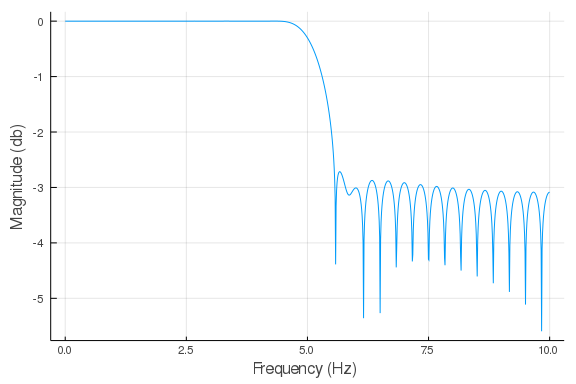
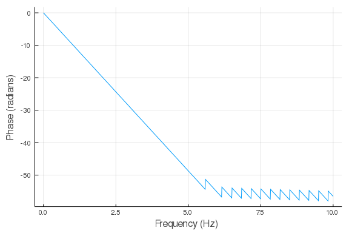

Least Squares¶
In this lecture, we will cover least squares for data fitting, linear systems, properties of least squares and QR factorization.
Least squares for data fitting¶
Consider the problem of fitting a line to observations y_i gven input z_i,\ i = 1,\dots, n.
DSP.jl package doesn't (yet) have a method to calculate the the frequency response of a FIR filter so we define it:
using Plots, DSP gr() function FIRfreqz(b::Array, w = range(0, stop=π, length=1024)) n = length(w) h = Array{ComplexF32}(undef, n) sw = 0 for i = 1:n for j = 1:length(b) sw += b[j]*exp(-im*w[i])^-j end h[i] = sw sw = 0 end return h end
FIRfreqz (generic function with 2 methods)
Design Lowpass FIR filter¶
Designing a lowpass FIR filter is very simple to do with DSP.jl, all you need to do is to define the window length, cut off frequency and the window. We will define a lowpass filter with cut off frequency at 5Hz for a signal sampled at 20 Hz. We will use the Hamming window, which is defined as: w(n) = \alpha - \beta\cos\frac{2\pi n}{N-1}, where \alpha=0.54 and \beta=0.46
fs = 20 f = digitalfilter(Lowpass(5, fs = fs), FIRWindow(hamming(61))) w = range(0, stop=pi, length=1024) h = FIRfreqz(f, w)
1024-element Array{Complex{Float32},1}:
1.0f0 + 0.0f0im
0.99546844f0 + 0.095055714f0im
0.98191506f0 + 0.1892486f0im
0.95946306f0 + 0.28172377f0im
0.9283168f0 + 0.37164196f0im
0.8887594f0 + 0.45818728f0im
0.84115064f0 + 0.54057467f0im
0.7859234f0 + 0.618057f0im
0.72357976f0 + 0.6899319f0im
0.65468615f0 + 0.7555481f0im
⋮
0.00043952762f0 - 0.00041908873f0im
0.0005152718f0 - 0.00040521423f0im
0.0005873293f0 - 0.00037745363f0im
0.0006531789f0 - 0.0003367371f0im
0.0007105166f0 - 0.00028444792f0im
0.0007573364f0 - 0.00022237403f0im
0.0007920005f0 - 0.00015264557f0im
0.0008132961f0 - 7.766036f-5im
0.0008204784f0 - 3.1148685f-18im
Plot the frequency and impulse response¶
The next code chunk is executed in term mode, see the script for syntax.
julia> h_db = log10.(abs.(h)); julia> ws = w/pi*(fs/2) 0.0:0.009775171065493646:10.0
plot(ws, h_db, xlabel = "Frequency (Hz)", ylabel = "Magnitude (db)")

And again with default options
h_phase = unwrap(-atan.(imag.(h),real.(h))) plot(ws, h_phase, xlabel = "Frequency (Hz)", ylabel = "Phase (radians)")
